Bring Your Club,
Office or College.
Join as a team, compete with other teams, and win together.
See Treqz for teams
Treqz is a free app that tracks your treks and runs, lets you compete with friends, and gives you real rewards for getting outside.
Join the waitlistSee 59 Indian treks in 3D, with honest info on difficulty, best months and permits.
Run or walk a loop and the ground inside becomes your crew's turf. Train for your next trek, find races with 3D course previews, and earn Peaks for showing up.
Every kilometre earns Peaks. Compete with friends and spend them on real rewards.
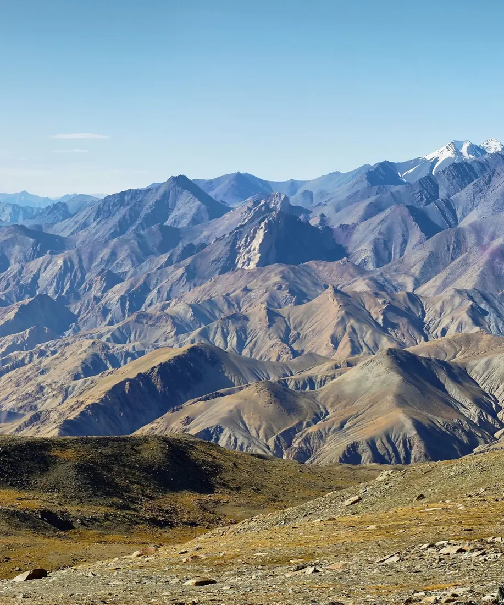
Markha Valley · 5,260 m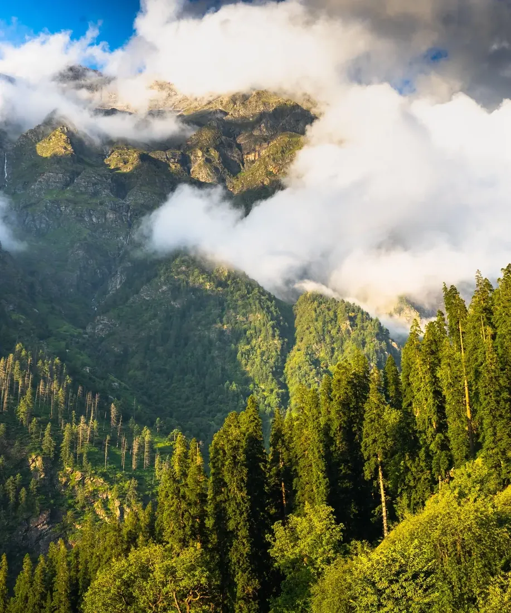
Kheerganga · 2,960 m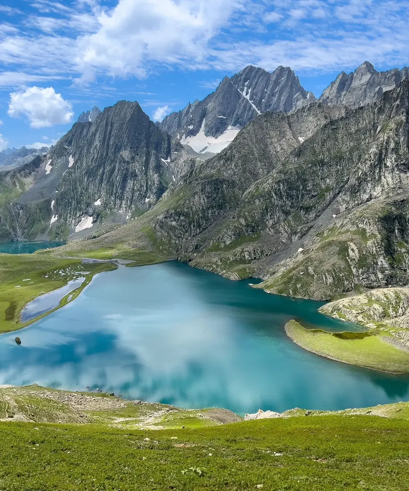
Kashmir Great Lakes · 4,206 m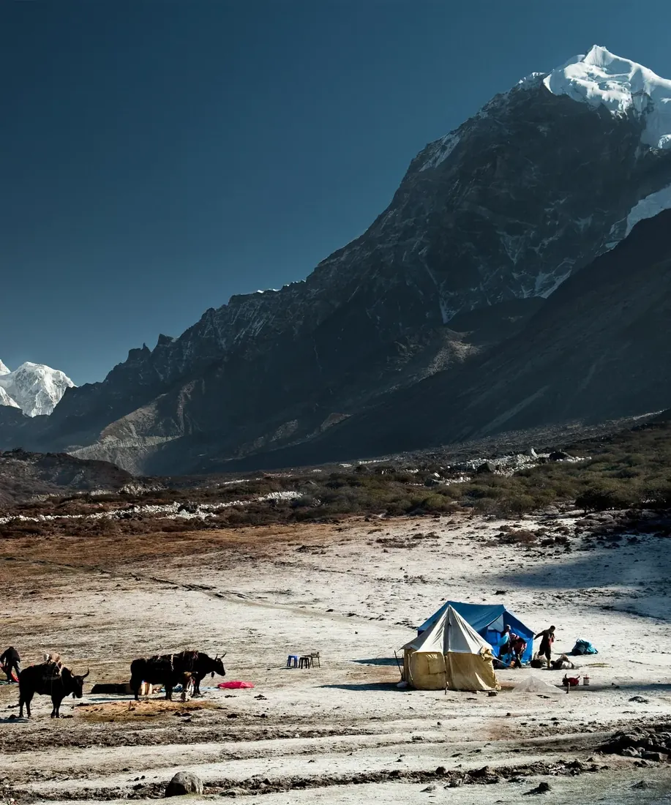
Goechala · 4,602 m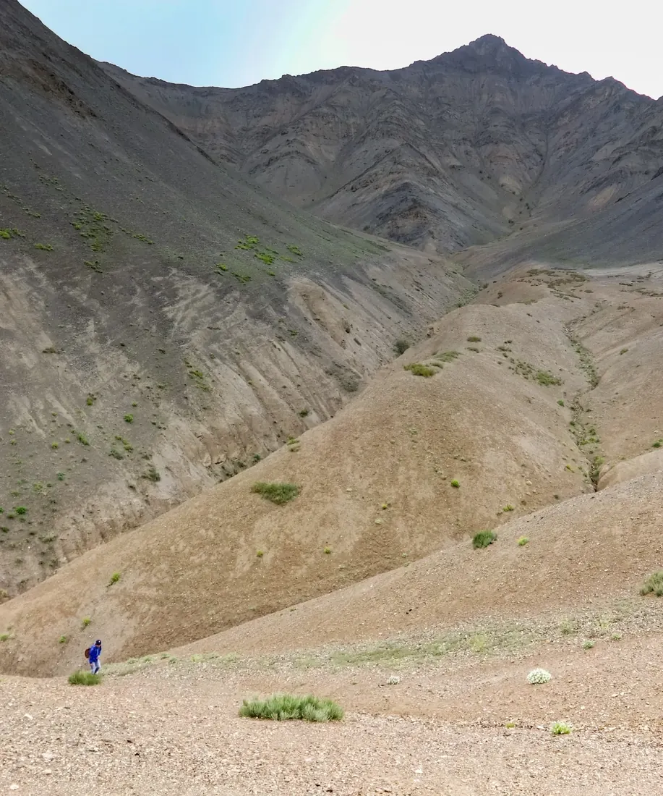
Ladakh treks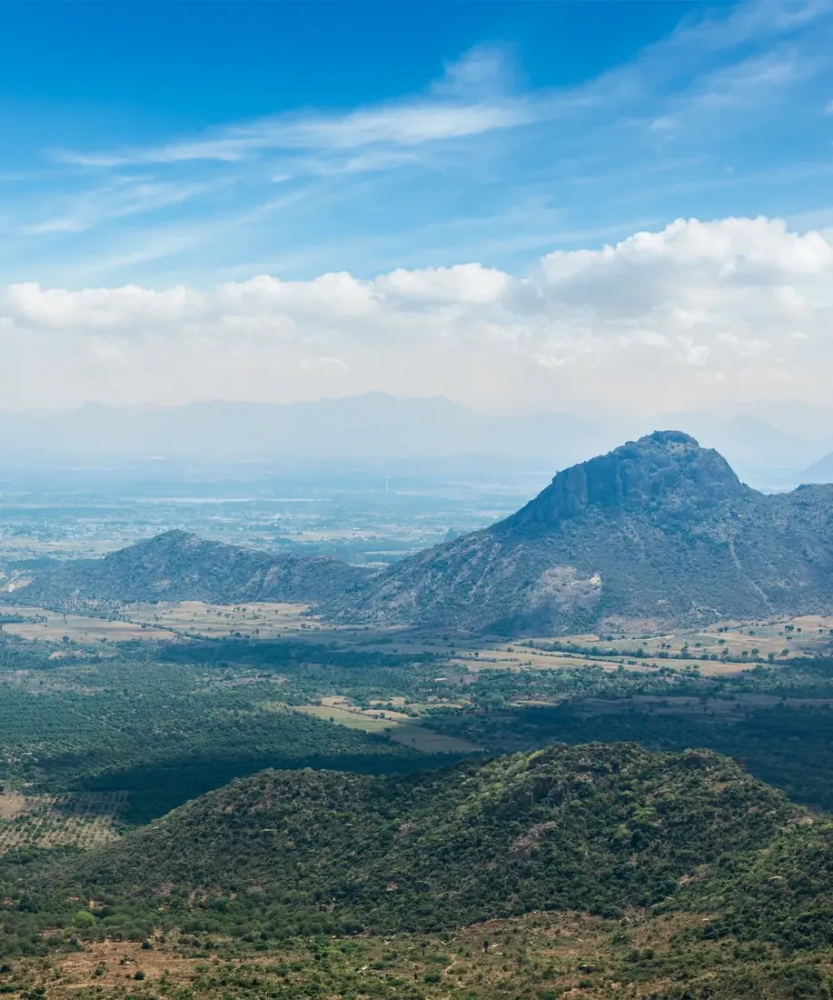
Western Ghats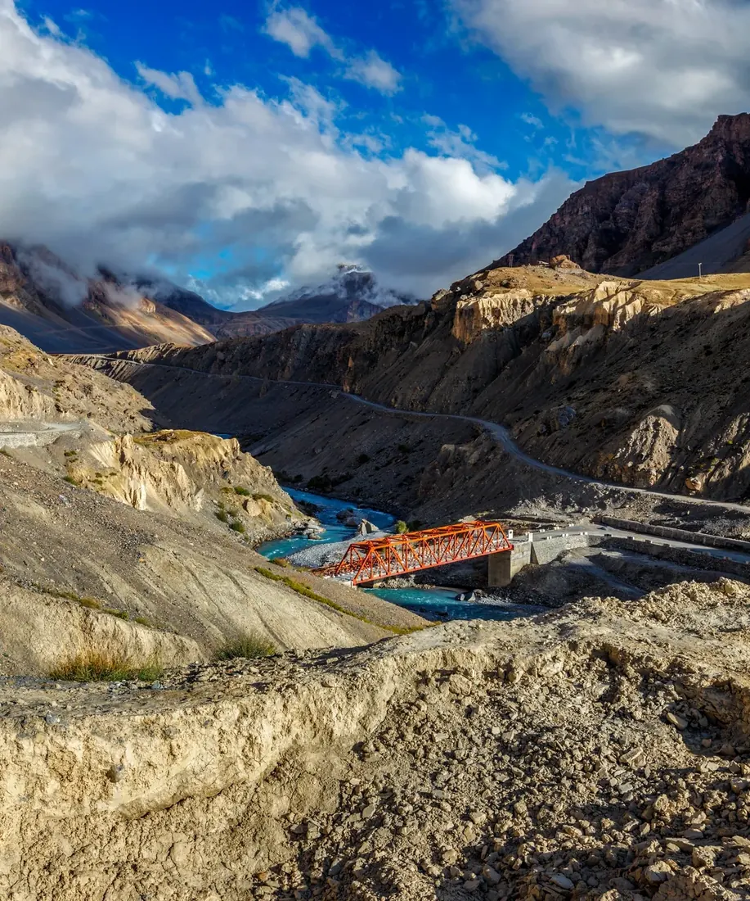
Spiti, HimachalPick when you can go, fly the trail, check how hard it really is, read the rules, then compare who runs it. No sign-up.
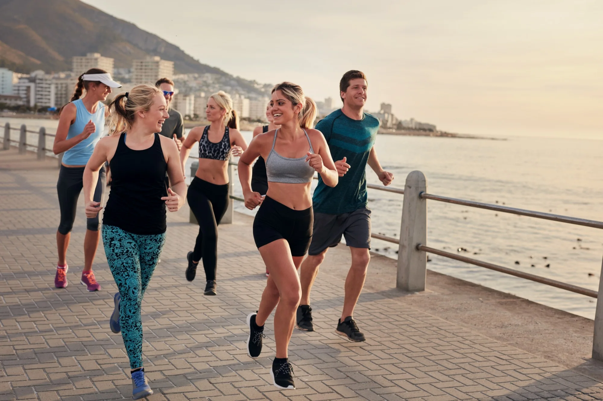
Neutral, sourced, and built from real terrain.
Save a trek once at home. On the trail, the 3D map, route and camps work with no network.
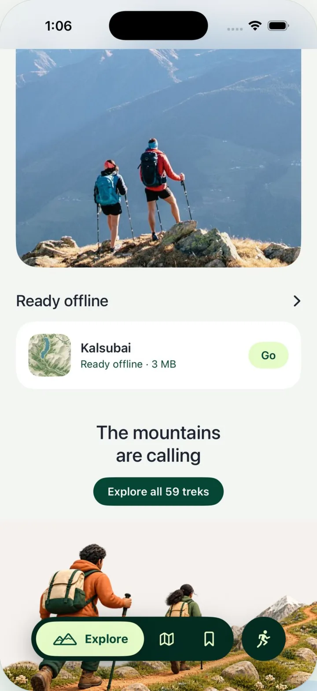
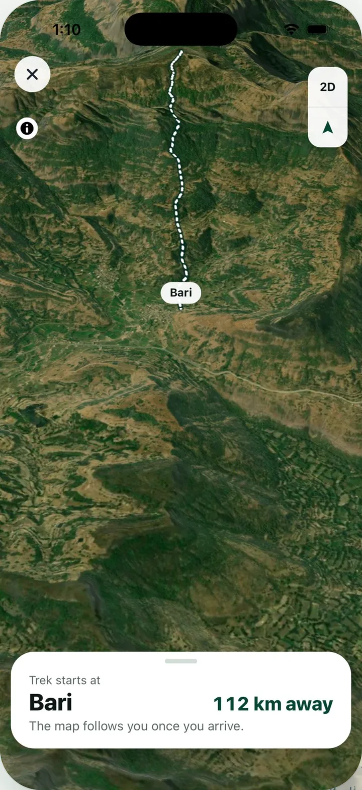
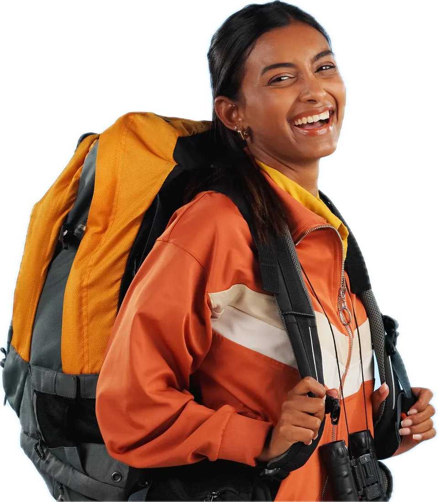
Made for Himalayan trails where phones lose signal.
We don't sell treks, and no one can pay to rank higher.
Use it free. An optional Pro plan adds extras.
Join as a team, compete with other teams, and win together.
See Treqz for teamsA free app for trekking and running. It tracks your activity, lets you compete with friends, and rewards you for getting outside. The 3D trek atlas is already live on this site.
No. Runs and walks in your city count too. Treks are just the big quests.
Yes. Treqz is free to use. An optional Pro plan will add extras.
No. We don't sell treks, take bookings or earn commissions, and no operator pays for a listing or a ranking.
We're building it now: Android first, then iPhone. Join the waitlist and you'll hear the day it launches.

Be the first to get Treqz when it launches.
Treqz is a free atlas of trekking in India. Each of these 59 treks is rebuilt in 3D from satellite elevation data and imagery, so you can fly the route camp by camp before you go: Himalayan winter summits, high passes and glacier walks, monsoon ridges in the Western Ghats and the root bridges of Meghalaya. Trek pages give the day-by-day itinerary, best months, cost, permits, gear and operators, each linked to its source. We don't run treks or take commissions.
Most searched treks: Triund Trek · Kedarkantha Trek · Hampta Pass Trek · Valley of Flowers Trek · Brahmatal Trek · Har Ki Dun Trek · Sandakphu Trek · Chadar Trek · Roopkund Trek
Uttarakhand: Kedarkantha Trek · Brahmatal Trek · Dayara Bugyal Trek · Har Ki Dun Trek · Nag Tibba Trek · Chopta Chandrashila Trek · Kuari Pass Trek · Valley of Flowers Trek · Roopkund Trek · Pangarchulla Trek · Ali–Bedni Bugyal Trek · Bali Pass Trek · Phulara Ridge Trek · Kedartal Trek · Gaumukh Tapovan Trek · Pindari Glacier Trek · Kafni Glacier Trek · Panchachuli Base Trek · Madmaheshwar Trek · Dodital Trek · Satopanth Tal Trek
Himachal: Triund Trek · Hampta Pass Trek · Bhrigu Lake Trek · Beas Kund Trek · Pin Parvati Pass Trek · Rupin Pass Trek · Buran Ghati Trek · Kareri Lake Trek · Prashar Lake Trek · Sar Pass Trek · Kheerganga Trek · Indrahar Pass Trek
Western Ghats: Kudremukh Trek · Kumara Parvatha Trek · Chembra Trek · Meesapulimala Trek · Kalsubai Trek · Harishchandragad Trek · Rajmachi Trek · Sandhan Valley Trek · Rajgad to Torna Trek · Tadiandamol Trek · Agasthyarkoodam Trek
Kashmir & Ladakh: Kashmir Great Lakes Trek · Tarsar Marsar Trek · Markha Valley Trek · Chadar Trek · Kolahoi Glacier Trek · Rumtse to Tso Moriri Trek
Sikkim & Darjeeling: Sandakphu Trek · Goechala Trek · Dzongri Trek · Green Lake Trek
Northeast: Dzükou Valley Trek · Nongriat Root Bridges Trek · Bailey Trail Trek · David Scott Trail Trek
Central India: Dholkal Trek
Guides: Treks in Uttarakhand · Treks in Himachal Pradesh · Treks in Kashmir and Ladakh · Treks in the Western Ghats · Treks in Sikkim and Darjeeling · Treks in Northeast India · Winter Treks in India · Monsoon Treks in India · Easy Treks in India for Beginners · Weekend Treks in India (1–2 Days) · High-Altitude Treks in India (Above 4,500 m) · 2 Day Treks in India · 3 Day Treks in India · 4 Day Treks in India · 5 Day Treks in India · 6 Day Treks in India · 7 Day Treks in India · 8 Day Treks in India · Treks in Uttarkashi, Uttarakhand · Treks in Chamoli, Uttarakhand · Treks in Kullu, Himachal Pradesh · Treks in Kangra, Himachal Pradesh · Treks in Leh, Ladakh · Treks in Ahilyanagar, Maharashtra · Highest Treks in India · Longest Treks in India · Toughest Treks in India · Family-Friendly Treks in India · Treks in India Under ₹10,000 · All 91 guides and 101 comparisons → · Trek planning blog →
Blog: Running guides · Trek guides · Trek planning · Trek safety · Clubs and teams · Kedarkantha trek guide: itinerary, cost, best time, permits · Best winter treks in India (December to February) · How to start running in India: a 5K plan for beginners · How to start a run club in India: a step-by-step checklist · Himalayan trek packing list: winter and summer · Altitude sickness on treks: symptoms, prevention, when to descend · Best running apps in India, compared · What is territory running? How GPS turf games work · Trek permits in India: what Indians and foreigners need · How much does a trek in India cost? Prices for 6 popular treks · All posts